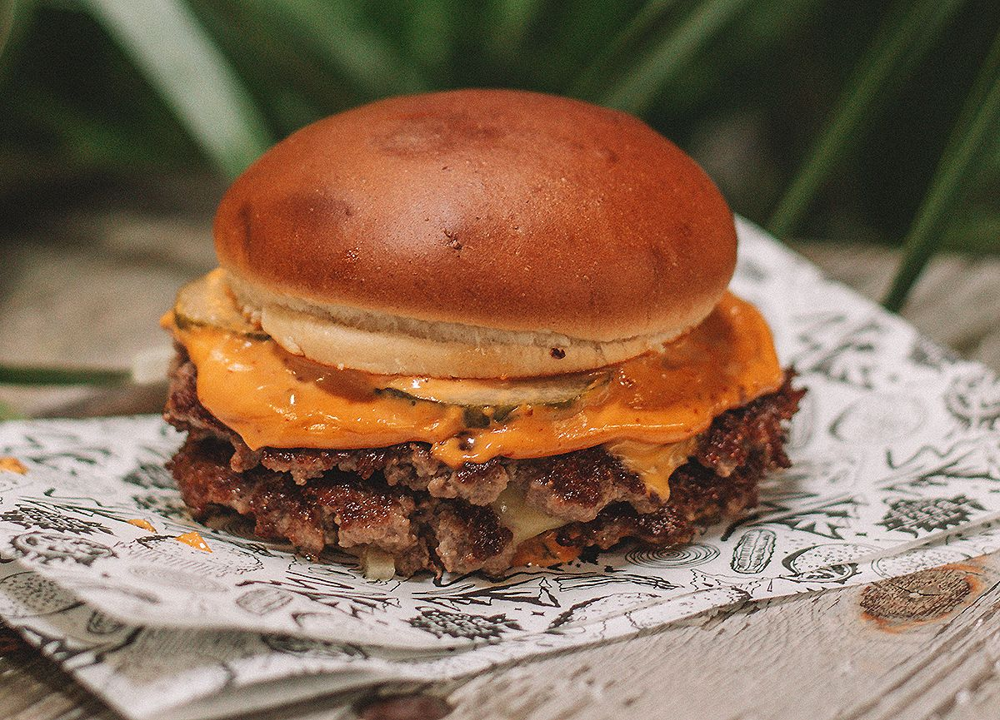

La Burger

Smash burger definitiva
En esta receta, prepararemos una deliciosa Smash burger, simple pero eficaz, no os arrepentireis
Ingredientes
- Pan Brioche de hamburguesa
- Carne picada de vaca (150gr aprox)
- 2 lonchas queso cheddar
- Mermelada de bacon
- Salsa barbacoa
Pasos
- Dividimos la carne en 75gr cada una
- Calentamos el pan en la sarten
- Cogemos la bola de carne y la aplastamos en la sarten hasta tener una burger decente
- Dejamos cocinar durante 1minutos por cada lado
- Colocamos el queso mientras se esta haciendo el 2do lado, y dejamos que se derrita duranete ese minuto
- Montamos la burger, Pan, salsa barbacoa, carne, carne, mermelada de bacon.